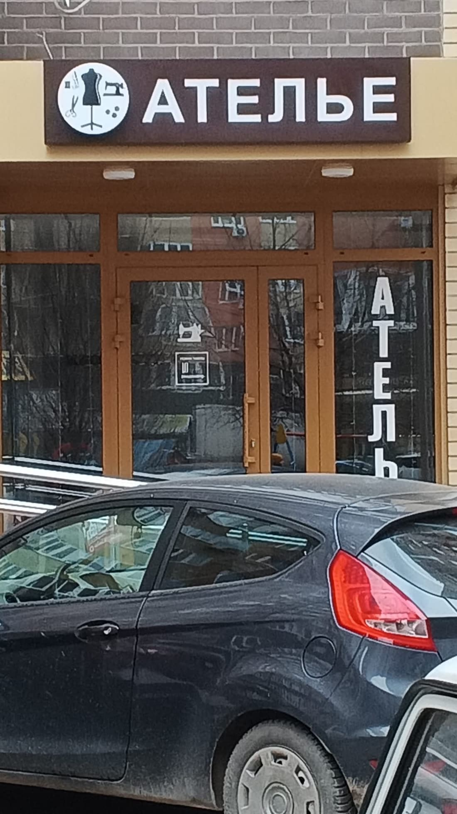

| 2ГИС | Яндекс Карты | |
|---|---|---|
| Рейтинг | 4,9 · 78 оценок | 5,0 · 72 оценки |
| Статус данных | «Компания давно не обновляла данные» | «Владелец следит за актуальностью» |
| Ответы на отзывы | 1 из 49 последних | На все 50 последних |
| Часы работы | Пн–Пт 10–19, Сб–Вс 10–17 | Совпадают |
| Цены | Нет | 4 позиции, «давно не обновлялось» |
| Фото | 23, снаружи только 3 | 31 |
| Сайт | Нет | Нет |
Что нашёл
2ГИС пишет каждому: «Компания давно не обновляла данные» важно
Эта строка стоит прямо под телефоном, а в разделе «Инфо» ещё и «Актуальность данных не подтверждена». В Яндексе в это же время написано «Владелец следит за актуальностью информации». Человек из 2ГИС видит только первое и сомневается, работаете ли вы.
В 2ГИС ответ только на 1 отзыв из 49 важно
В Яндексе вы ответили на все 50 последних отзывов, это редкость. А в 2ГИС единственный ответ от января 2025, про переезд. Без ответа остались свежие отзывы этой осени, в том числе тройка за сентябрь 2026 про шубу: «один карман зашила, второй не стала». Её читают все, кто листает отзывы.
После переезда вас теряли, а снаружи почти нечего показать важно
В 2ГИС висит единица за январь 2025: «Они закрылись». Вы ответили, что переехали в соседний дом, 50 метров. При этом из 23 фото в 2ГИС снаружи всего 3, а на вывеске написано только «Ателье», без названия. Новому клиенту трудно понять, что это именно вы.

На вашей карточке в 2ГИС рекламируются конкуренты заметно
Сразу под вашим адресом блок «Похожие организации» с рекламой: «Ателье по пошиву и ремонту одежды. Швейные работы любой сложности. Быстро и качественно, у нас!» и кнопкой «Позвонить». Ниже ещё три ателье: «Любава», «Твой мастер», «Moda&Стиль».
Нет цен, а люди про них спрашивают заметно
В 2ГИС вкладка «Цены» пустая. В «Вопросах о месте» висят «От чего зависит цена работ?», «Есть ли срочный ремонт?», «Есть ли примерка при ремонте?», и отвечает на них ИИ-помощник 2ГИС, а не вы. В Яндексе цен 4 (молния от 600 ₽, собачка от 500 ₽, подшив детских брюк 500 ₽, пошив от 5 000 ₽) с пометкой «Давно не обновлялось».
В 2ГИС не видно, что вы шьёте и подгоняете просто
В Яндексе указаны подгонка, вышивка, пошив свадебных платьев, костюмов, верхней одежды, из меха и кожи. В 2ГИС только три рубрики: «Швейные ателье», «Ателье меха и кожи», «Ремонт одежды», без описания услуг. При этом 2ГИС сам пишет под карточкой «Также люди ищут: Молнии».
Соседи по «Похожим местам» в Яндексе собирают больше оценок и запускают акции просто
У вас 72 оценки. Рядом в подборке «Ателье Новый Образ» со 165 оценками, Pijaikina со значком «Хорошее место 2026», а у одного ателье прямо в карточке «Акция: Подшить брюки от 800 рублей».
Сайта нет ни в одной карточке просто
Человек, который выбирает ателье, хочет увидеть цены, как проходит примерка и как дойти. Сейчас это негде показать, кроме переписки в мессенджере.
Что предлагаю
Беру на себя всё из списка, от вас нужно только подтвердить 2ГИС по коду из СМС.
- Подтвердить карточку в 2ГИС, убрать плашку о старых данных, одно расписание везде
- Цены и список услуг в обеих карточках, правильные рубрики
- Ответить на все отзывы в 2ГИС и дальше отвечать на новые
- Фото входа и «как дойти» после переезда
- Сайт ателье со ссылкой из обеих карточек: вот концепт
- Раз в месяц отчёт: сколько людей посмотрели карточку, позвонили и построили маршрут
Разбор бесплатный. Стоимость работ обсудим, она небольшая.